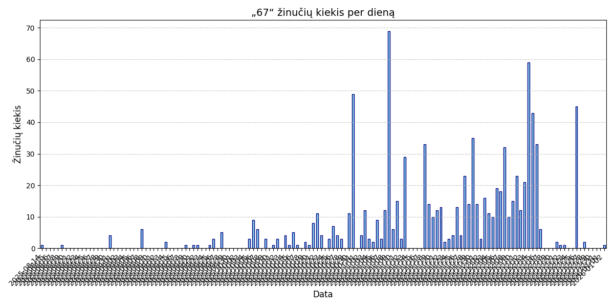
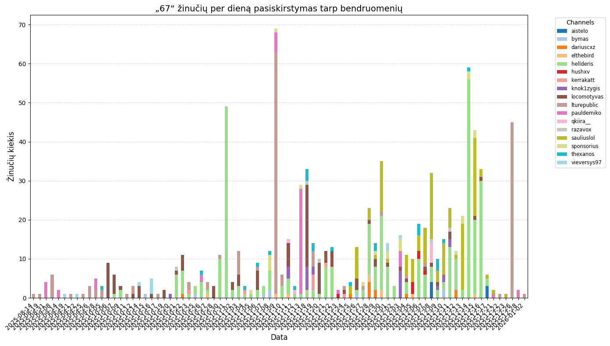
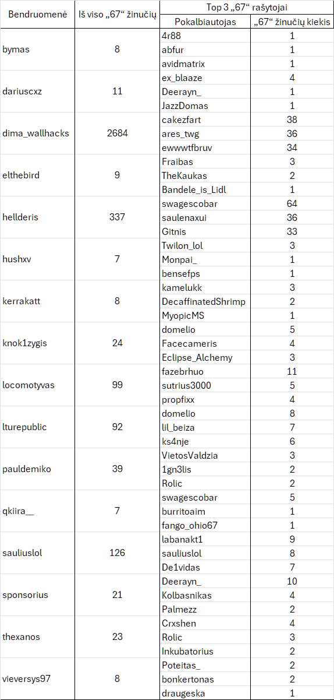

„67“ populiarumas lietuviškose „Twitch“ bendruomenėse
Friebay/Lithuanian-Twitch-Atlas
Pildoma, paskutinis atnaujinimas: 2026-01-05

1 pav. Stulpelinė diagrama „67“ žinučių

2 pav. Sudėtinė stulpelinė diagrama „67“ žinučių
1 lent. Dažniausi „67“ žinučių rašytojai skirtingose bendruomenėse
